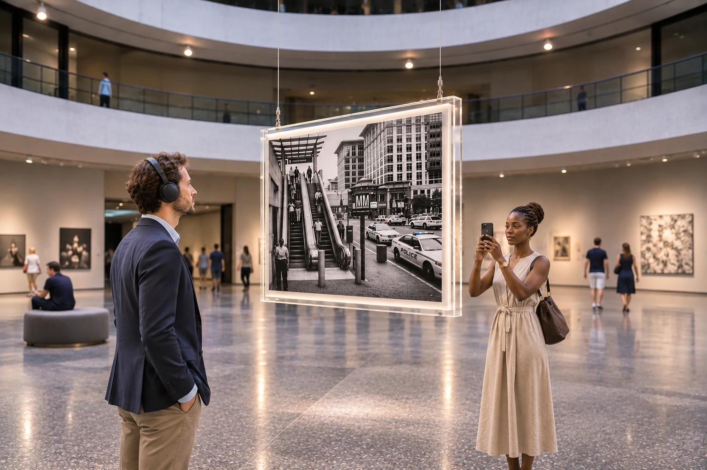

Proposal for Sound Scene 2027: Sounds of the City
From passive hearing without to freedom of perception within.
Project description
Birds singing, rain falling, and the gentle chime of wind bells coexist with blaring sirens, honking horns, and the thunderous roar of Metro trains rushing past.
The city’s score is collectively composed by its inhabitants, yet each of us remains an unwitting listener to a symphony we cannot choose.
Project description
“Re:Sonance” is an interactive sound artwork that plays back a participant’s urban soundscape, instantly transforming it into an improvisation where unwanted noises give way to instrumental performances of the participant’s choosing.
A piercing police siren at the corner of 7th and H Streets in Washington, DC, for instance, might be transformed into a violin improvisation composed from the siren’s own sounds.
Within the broader urban soundscape, rather than passively receiving unwanted sounds, Re:Sonance empowers individuals to respond to the city by hearing them anew as melodic instrumental performances.
Hear it
Below is a city scene with five sounds playing at once: a siren, a motorcycle, a metro train, footsteps and a crowd. Each sound sits on its own line. You decide which of them becomes music, and which instrument plays it.
For each sound, choose Sound to keep it as it is, Music to hear the music made from it, or Mute. Every piece of music follows its own sound: the siren’s violin follows the siren’s own pitch, the motorcycle’s notes fall on its engine pulses, the footsteps’ piano plays on each step. All music shares one tempo and one major pentatonic scale, so any combination you choose stays in harmony. Click a line to move through the scene.
This preview plays a ready-made scene built from five separate recordings, so each sound can be told apart exactly. At the exhibition the sounds come from the participant’s own recording. Separating them by software is under test: prominent sounds such as sirens and trains separate well, steady crowd noise does not yet. The instrument pairings shown here were chosen by hand for this preview.
Audience experience and participation
The onsite interactive installation
On one side, visitors hear the city's original, unaltered soundscape. As they move to the other side, unwanted noises, such as piercing sirens, are transformed in real time into improvisational compositions performed by instruments of their choosing, creating a new resonance within the familiar urban soundscape.
This physical passage from one side to the other becomes a metaphor for a shift in perspective: the external world remains unchanged, yet we can choose how we listen, perceive, and interpret what surrounds us.

Audience experience and participation
Participants are not limited to the physical installation. Visitors can participate directly through the interactive installation of this artwork onsite or use their own smartphones to contribute and interact from anywhere beyond the museum’s physical location.
Anyone with a smartphone can contribute sounds from their own neighborhood, whether in Washington, DC, or another city around the world. Shaped by diverse environments, experiences, and personal interpretations, this distributed participation transforms the installation into a living sonic portrait of urban life.
Throughout each day, individual contributions accumulate into an evolving collective composition. At the end of the day, the installation presents a collective soundscape of the city, bringing together the sounds participants have chosen to preserve and the noises they have transformed into music. Each day's composition becomes a unique reflection of its contributors, revealing not only what cities sound like, but how their inhabitants wish to hear them.
Art statement
Life unfolds to a rhythm not entirely under our control. While we may have no choice but to accept what happens around us, we retain the freedom to choose how we perceive and respond to it.
Within the inevitability of external circumstances resides the possibility of an inner freedom, not to alter what occurs, but to transform how it is perceived.
The original sounds are neither denied nor erased; instead, their dissonances become the very material from which new resonances emerge.
A metaphor for life and perception, expressed through an urban soundscape beyond our control that invites us to respond, relate, and reinterpret our encounters.
The city’s ever-changing sounds cannot be fully anticipated or predetermined. Each sonic moment offers a unique foundation for an instrumental improvisation.
Re:Sonance draws directly upon the acoustic characteristics of urban sounds as they are, allowing the city’s spontaneous sonic encounters to shape musical expressions that could not have been deliberately composed in advance.
Rather than changing or eliminating the sounds of the city, Re:Sonance invites a shift in perception, from passively hearing the sounds without to finding freedom within.
Artistic and technical feasibility
Re:Sonance is a hybrid, participatory sound art that connects an interactive installation with potential participants across the city and beyond.
Dreamality Lab · Sheng-Ying Pao · paoshengying@gmail.com · dreamalitylab.cc